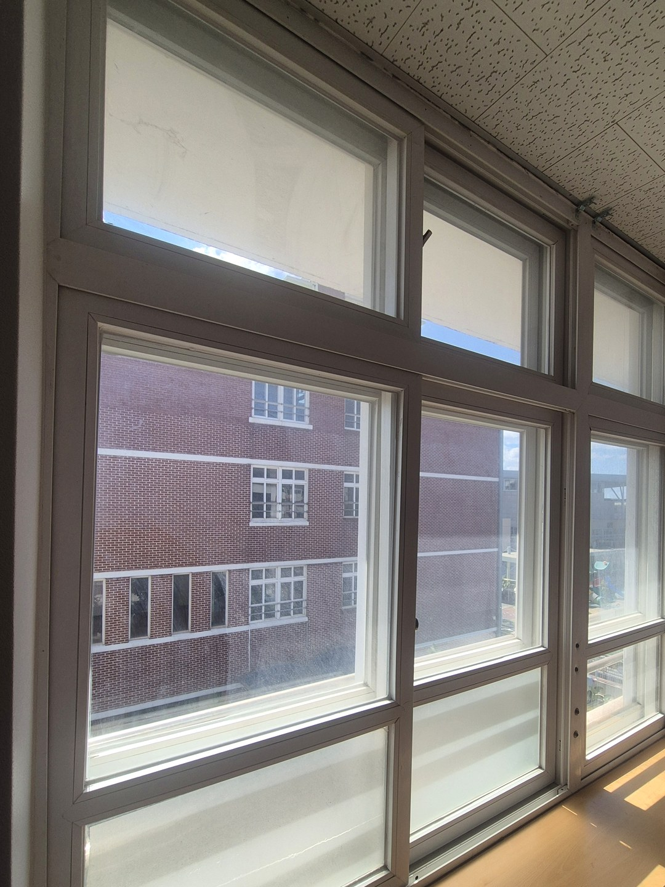
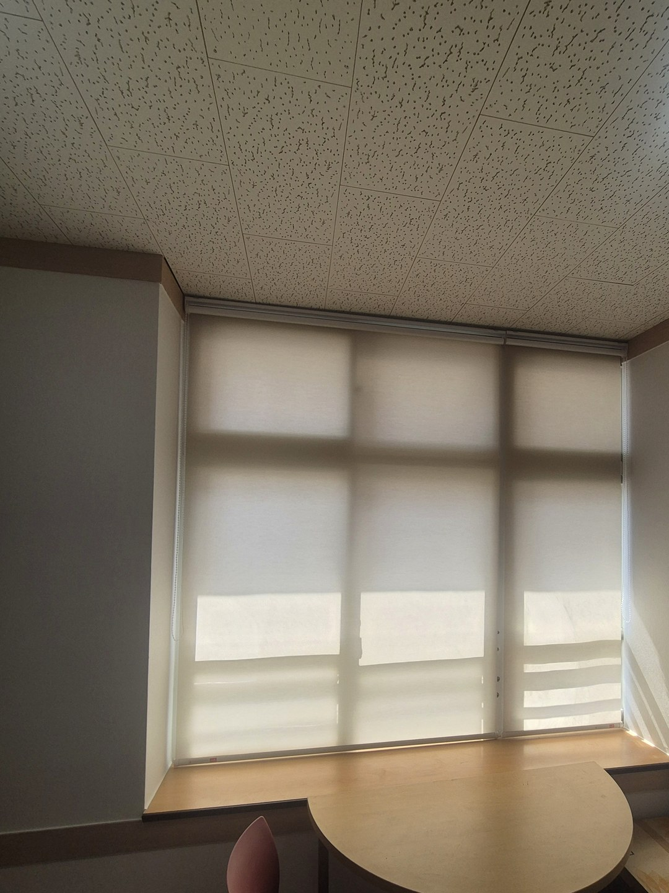
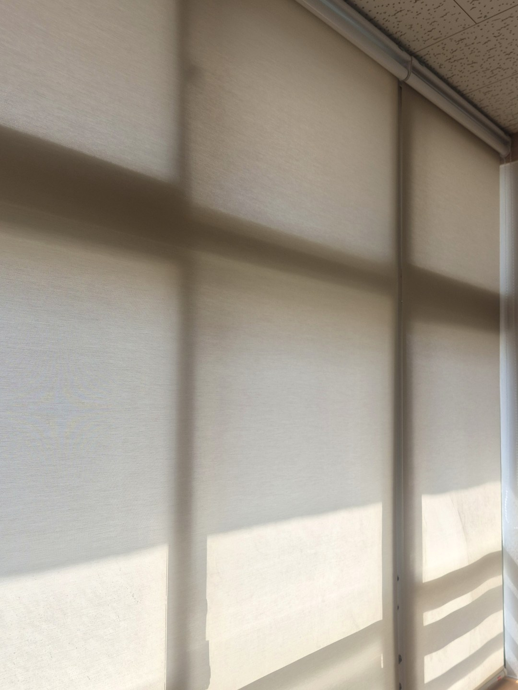
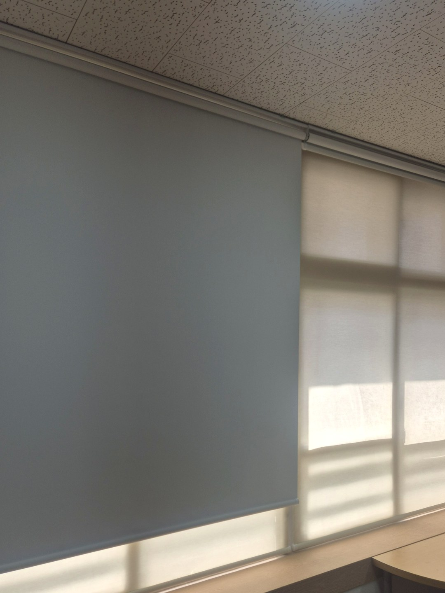
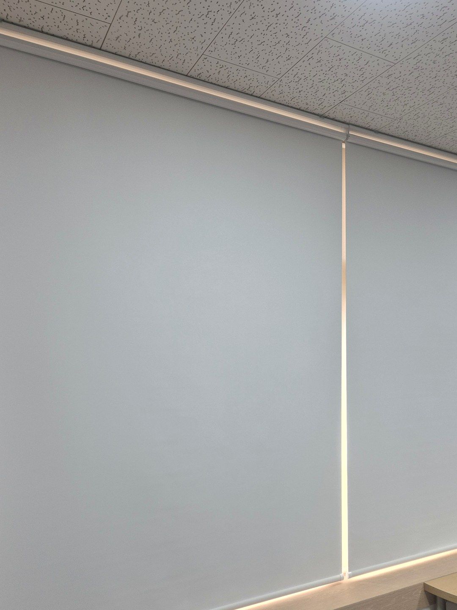
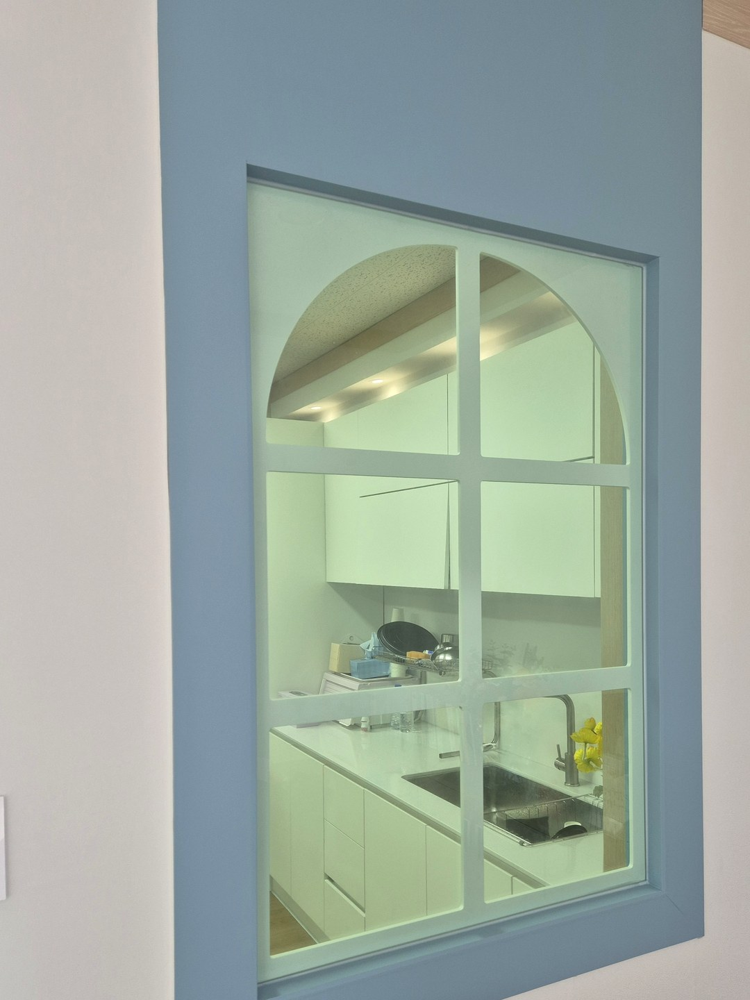
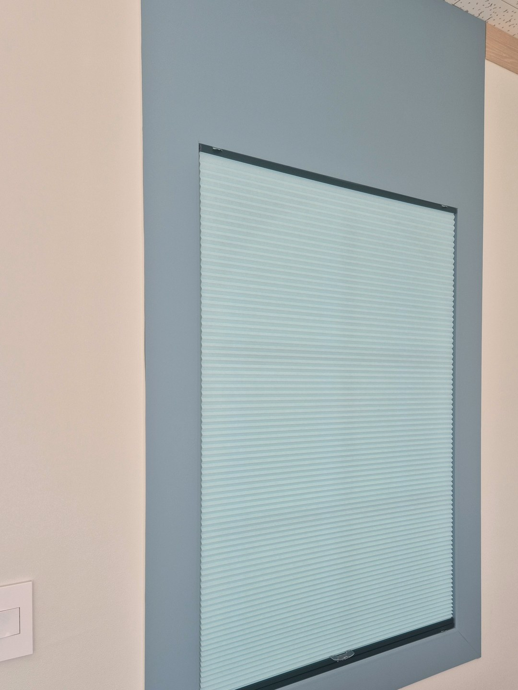

2026년 9월 16일 시공
포항 중학교
롤스크린 교체·허니콤블라인드 시공후기

포항에 있는 한 중학교 시공입니다.
학교 이름은 적지 않고 지역과 제품만 남깁니다.
이 글은 한 건물 안에서 세 가지 제품을 어디에 어떻게 나눠 달았는지를 정리한 기록입니다.
먼저 기존 롤스크린을 떼어냈습니다
창마다 오래 쓴 화이트 롤스크린이 걸려 있었습니다.
새 제품을 달기 전에 기존 롤스크린과 브래킷을 모두 철거했습니다.

일반 창 — 베이지 롤스크린
대부분의 창은 화이트에서 베이지 롤스크린으로 바꿨습니다.
창이 가로로 길고 중간에 세로 창틀이 서 있어, 칸마다 한 장씩 따로 만들었습니다.
장마다 구슬줄이 따로 있어 필요한 칸만 내려 쓸 수 있습니다.


컴퓨터 뒤쪽 창 — 베이지와 화이트 암막, 두 겹
컴퓨터가 놓인 자리 뒤쪽 창에는 롤스크린을 앞뒤로 두 개 달았습니다.
하나는 다른 창과 같은 베이지, 하나는 화이트 암막 롤스크린입니다.
둘 다 올려 두면 창이 드러나고, 베이지만 내리면 빛이 걸러지고, 암막까지 내리면 빛이 막힙니다.


상담실 실내 창 — 허니콤블라인드
상담실 안쪽 벽에는 파란 틀로 둘러진 실내 창이 하나 있습니다.
이 방은 인테리어가 따로 꾸며져 있어서, 그 분위기에 어울리는 색의 허니콤블라인드를 골랐습니다.
허니콤블라인드는 올렸을 때 원단이 얇게 접혀 창 위쪽에 거의 보이지 않게 올라갑니다.


미리 말씀드리는 것
베이지 롤스크린만으로는 방이 어두워지지 않습니다.
화면을 또렷하게 봐야 하는 방이라면 암막을 따로 생각하셔야 합니다.
반대로 두 겹은 장수만큼 부속이 더 들어가니, 모든 창에 두 겹을 권하지는 않습니다.
학교·기관 창 교체를 알아보고 계시다면
창 사진과 창 개수, 방마다 쓰임을 알려주시면 대략적인 견적을 말씀드립니다.
기존 제품 철거부터 설치까지 한 번에 진행합니다.
학교 창 이야기는 학교 전용 안내에 따로 정리해 두었습니다.
비슷한 시공